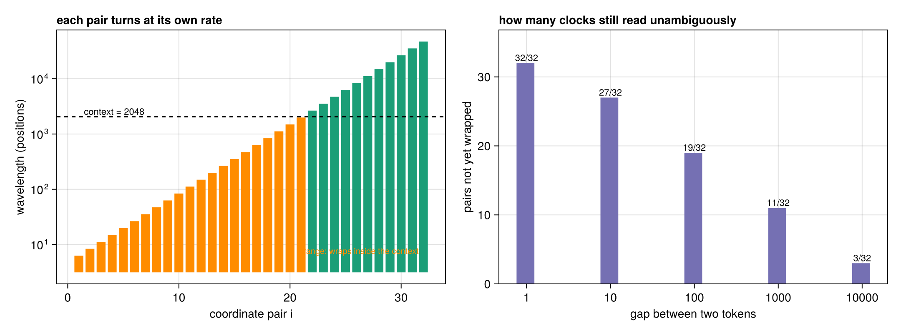
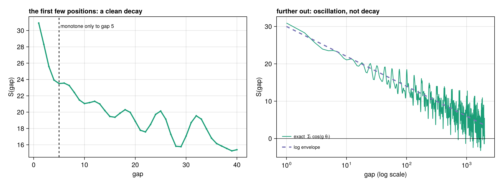
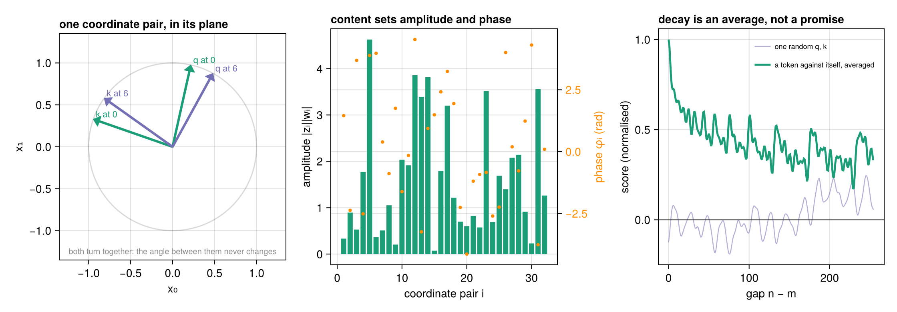
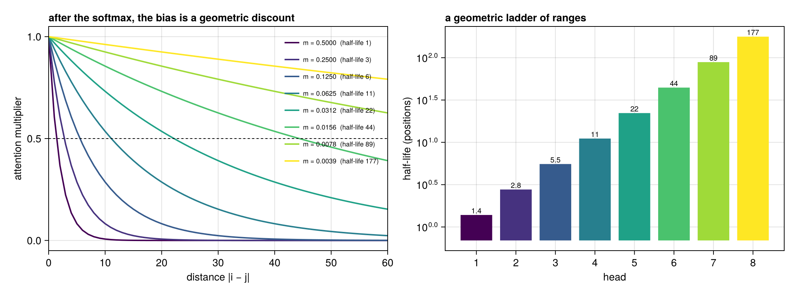
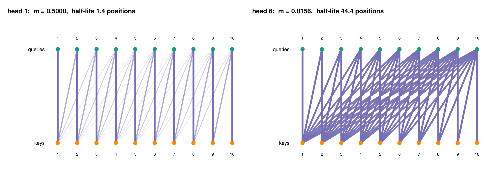

Positional encoding
A word vector says what a token is. Nothing so far says where it is, and attention on its own cannot tell.
That is worth stating precisely, because it is the reason everything on this page exists. An attention layer computes a score for every ordered pair of positions,
\[s_{ij} = \frac{\langle q_i,\, k_j \rangle}{\sqrt{d}},\]
and then mixes values according to softmax over those scores. Permute the input tokens by any permutation $\pi$ and every $q, k, v$ is permuted the same way, so the output is permuted and nothing else changes. Attention is equivariant to permutation: to it, a sentence is a bag. "The cat chases the mouse" and "the mouse chases the cat" are the same bag.
So order has to be injected deliberately. The useful way to see where the different schemes inject it is to draw attention as a weighted bipartite graph: query positions on one side, key positions on the other, one edge per pair carrying the score $s_{ij}$.
queries q₁ q₂ q₃ q₄ three places to intervene:
● ● ● ●
│╲ ╱│╲ ╱│╲ ╱│ ① node features, before any
│ ╲ ╱ │ ╲ ╱ │ ╲ ╱ │ edge exists → sinusoidal,
│ ╲ ╱ │ ╲ ╱ │ ╲ ╱ │ learned table
│ ╳ │ ╳ │ ╳ │ ② the node features used
│ ╱ ╲ │ ╱ ╲ │ ╱ ╲ │ inside the edge, every
│ ╱ ╲ │ ╱ ╲ │ ╱ ╲ │ layer → RoPE
│╱ ╲│╱ ╲│╱ ╲│ ③ the edge weight itself
● ● ● ● → ALiBi
keys k₁ k₂ k₃ k₄Everything below is one of those three choices. The historical movement has been from ① towards ② and ③, and the reason is worth understanding rather than memorising.
using CustomTokenizer, CairoMakie, LinearAlgebra, Random, StatisticsThe clocks both schemes are built from
Sinusoidal encoding and RoPE share one ingredient: a bank of angular frequencies, one per pair of coordinates,
\[\theta_i = base^{-2i/d}, \qquad i = 0, 1, \ldots, d/2 - 1,\]
a geometric progression from $1$ down to $1/base$. Pair $i$ comes back round after $\lambda_i = 2\pi/\theta_i$ positions:
λ = sinusoidal_wavelengths(64)
(fastest = round(λ[1], digits = 1), slowest = round(λ[end]), pairs = length(λ))(fastest = 6.3, slowest = 47117.0, pairs = 32)Six positions at the fast end, forty-seven thousand at the slow end. This is an odometer, or a bank of clocks: the fast wheels resolve neighbours, the slow ones say roughly where in the document you are, and a position is read off all the wheels at once. Because the spacing is geometric, the scheme is scale-free — each pair covers its own octave of distance, so the same machinery distinguishes gap 1 from gap 2 and gap 1000 from gap 2000.
A wheel is only informative while it has not wrapped, i.e. while $g\theta_i < \pi$:
θ = sinusoidal_frequencies(64)
[(gap, count(t -> gap * t < π, θ)) for gap in (1, 10, 100, 1_000, 10_000)]5-element Vector{Tuple{Int64, Int64}}:
(1, 32)
(10, 27)
(100, 19)
(1000, 11)
(10000, 3)At a gap of 10 000, only three of the 32 wheels still give an unambiguous reading. That is the real meaning of a context-length limit for these schemes.
plot_frequency_ladder(dim = 64, context = 2048)
Sinusoidal: fixed vectors, added once
sinusoidal_encoding builds the encoding from the original transformer paper: pair $i$ of column $p$ holds the cosine and sine of $p\theta_i$.
\[PE[2i, p] = \sin(p\,\theta_i), \qquad PE[2i+1, p] = \cos(p\,\theta_i)\]
The geometry
Each pair of coordinates lies exactly on the unit circle, so a column lives on a $d/2$-dimensional torus — a product of circles. One consequence is immediate and easy to check: every position vector has the same length, $\sqrt{d/2}$.
P = sinusoidal_encoding(64, 200)
extrema(norm(P[:, p]) for p in 1:200), sqrt(32)((5.656854249492378, 5.656854249492382), 5.656854249492381)Positions differ in phase only, never in magnitude. No position is intrinsically larger or more important than another; the encoding carries angle, not size.
Translation is a fixed rotation
The property that makes the scheme work is not the values but a relation between them. From the angle-addition formulas,
\[\sin((p+k)\theta) = \sin p\theta \cos k\theta + \cos p\theta \sin k\theta, \qquad \cos((p+k)\theta) = \cos p\theta \cos k\theta - \sin p\theta \sin k\theta,\]
so moving forward by $k$ acts on each pair as a 2×2 rotation, and on the whole column as a block-diagonal matrix $R_k$ that does not depend on $p$:
\[PE[:,\, p+k] = R_k \, PE[:,\, p] \quad \text{for every } p.\]
shift_operator builds it, so the claim can be tested rather than believed:
R = shift_operator(64, 7)
(same_for_every_p = maximum(norm(R * P[:, p+1] - P[:, p+8]) for p in 0:150),
orthogonal = norm(R'R - I))(same_for_every_p = 1.4370711030737468e-14, orthogonal = 5.803551130864175e-16)Both zero to machine precision. Translation in position is a linear, orthogonal map on the encoding — which is exactly the kind of thing the linear layers of a transformer can learn to detect.
What two positions score against each other
Take the dot product of two columns. The pairs decouple, and $\sin a \sin b + \cos a \cos b = \cos(a-b)$, so
\[PE[:,p] \cdot PE[:,q] \;=\; \sum_{i} \cos\!\big((p-q)\,\theta_i\big) \;=\; S(p-q).\]
Absolute position cancels exactly. The similarity matrix depends only on the gap, which makes it Toeplitz — constant along every diagonal:
S = sinusoidal_gap_score(64, 0:119)
Pn = sinusoidal_encoding(64, 120)
maximum(abs(dot(Pn[:, p], Pn[:, q]) - S[abs(p - q) + 1]) for p in 1:120, q in 1:120)2.3092638912203256e-14Where the usual story breaks
Most explanations stop at "and $S$ decays smoothly with distance, so nearby positions are similar". That is true for the first few positions and false afterwards, and it is easy to check which.
$S$ is a sum of 32 cosines at geometrically spaced frequencies. Such a sum is quasi-periodic, not monotone. At $d = 64$ it decreases only out to a gap of 5, turns back up at 6, and thereafter oscillates:
Sg = sinusoidal_gap_score(64, 0:2000)
(first_rise = findfirst(g -> Sg[g+1] > Sg[g], 1:2000),
peak = Sg[1],
beyond_500 = (round(minimum(Sg[501:end]), digits = 2),
round(maximum(Sg[501:end]), digits = 2)))(first_rise = 6, peak = 32.0, beyond_500 = (-3.29, 13.25))Against a peak of 32, the kernel wanders between −6 and +13 out past gap 500. Two positions 900 apart can score higher than two positions 400 apart.
There is a smooth curve underneath. Treating the sum over pairs as an integral and substituting $t = base^{-u}$ turns it into a cosine integral, giving sinusoidal_gap_envelope:
\[S(g) \;\approx\; \frac{d}{2}\left(1 - \frac{\gamma + \ln g}{\ln base}\right), \qquad \gamma \approx 0.5772\]
— a logarithmic decay, which is the precise sense in which the encoding spends its resolution equally per octave. But it is an asymptotic in the dimension, and at real head sizes it is only an envelope:
rel(dim) = (g = 10:1000;
mean(abs.(sinusoidal_gap_score(dim, g) .- sinusoidal_gap_envelope(dim, g))) /
(dim / 2))
[(dim, round(rel(dim), digits = 3)) for dim in (32, 64, 256, 1024, 4096)]5-element Vector{Tuple{Int64, Float64}}:
(32, 0.105)
(64, 0.066)
(256, 0.024)
(1024, 0.007)
(4096, 0.0)Ten per cent error at $d = 32$, essentially exact by $d = 4096$. The tidy picture is a high-dimensional limit.
plot_gap_kernel(dim = 64, len = 2000)
A learned table
learned_positions is the other classic: one column per position, trained like any other parameter, as GPT-2 and BERT do. There is no structure at all — no shift theorem, no guarantee that the gap is what matters, only whatever the data teaches.
size(learned_positions(8, 512))(8, 512)Simple, and it works, with one hard edge: column 512 is the last one that exists. The model cannot run past the length it was trained for. Everything else here has a value at every position, trained or not.
RoPE: rotate the query and the key
rope is what Llama, Gemma and Qwen use, and it is the cleanest idea on this page. It adds nothing to anything. It takes consecutive pairs of coordinates as points in a plane and rotates them by an angle proportional to the position, inside attention, at every layer.
\[R(p) = \bigoplus_{i} \begin{pmatrix} \cos p\theta_i & -\sin p\theta_i \\ \sin p\theta_i & \phantom{-}\cos p\theta_i \end{pmatrix}, \qquad q_m = R(m)\,q, \quad k_n = R(n)\,k\]
Why it works, in one line
$R$ is an orthogonal representation of the integers under addition:
d = 32
(composes = rotation_operator(d, 5) * rotation_operator(d, 9) ≈ rotation_operator(d, 14),
inverts = rotation_operator(d, 5)' ≈ rotation_operator(d, -5),
orthogonal = rotation_operator(d, 11)' * rotation_operator(d, 11) ≈ I)(composes = true, inverts = true, orthogonal = true)$R(a)R(b) = R(a+b)$ and $R(a)^{\top} = R(-a)$. That is the whole argument, because it gives
\[\langle R(m) q,\; R(n) k \rangle = q^{\top} R(m)^{\top} R(n) k = q^{\top} R(n-m) k.\]
The score depends on $n - m$ and on nothing else. Not approximately — exactly, at any distance:
rng = Xoshiro(1); q, k = randn(rng, 64), randn(rng, 64)
[(m, n, round(dot(rope(q, m), rope(k, n)) - dot(q, rope(k, n - m)); sigdigits = 2))
for (m, n) in ((7, 3), (100, 96), (5000, 4996))]3-element Vector{Tuple{Int64, Int64, Float64}}:
(7, 3, 1.8e-15)
(100, 96, -1.8e-15)
(5000, 4996, 4.3e-14)Rotations also preserve length, so position cannot make a token louder:
norm(rope(q, 12345)) ≈ norm(q)trueWhat the score is made of
Read pair $i$ of $q$ as a complex number $z_i$ and of $k$ as $w_i$. Then the whole score unpacks into one cosine per pair — rope_channels returns the pieces:
\[\langle R(m)q,\, R(n)k \rangle = \sum_i \underbrace{|z_i||w_i|}_{\text{content}} \, \cos\big(\underbrace{g\,\theta_i}_{\text{position}} + \underbrace{\varphi_i}_{\text{content}}\big), \qquad g = n - m,\;\; \varphi_i = \arg w_i - \arg z_i\]
ch = rope_channels(q, k)
[(gap, round(dot(rope(q, 0), rope(k, gap)); digits = 6),
round(sum(ch.amplitude .* cos.(gap .* ch.frequency .+ ch.phase)); digits = 6))
for gap in (0, 3, 40, 500)]4-element Vector{Tuple{Int64, Float64, Float64}}:
(0, -8.203957, -8.203957)
(3, 0.912152, 0.912152)
(40, -6.273871, -6.273871)
(500, 12.616143, 12.616143)This is the physical significance of RoPE, and it is a genuinely different thing from "adding position information". Content chooses each channel's amplitude and phase; position only advances the argument. The attention score is a filter bank over relative distance, and a head can tune itself to fire at a particular gap by choosing its phases — a capability no additive scheme offers.
plot_rope_geometry(dim = 64)
The right-hand panel is a caution. RoPE is often said to "decay with distance". Averaged over random vectors compared with themselves it does, from 1.0 to about 0.35 over 256 positions. For one particular query and key it does not decay at all — it oscillates around zero. The decay is a statistical tendency, not a property of every pair.
Why rotating beat adding
Add a position vector to a token vector and expand the score:
\[(x + PE_p) \cdot (y + PE_q) \;=\; \underbrace{x \cdot y}_{\text{content}} + \underbrace{PE_p \cdot PE_q}_{\text{position}} + \underbrace{x \cdot PE_q + PE_p \cdot y}_{\text{cross terms}}\]
Only one of the four terms is the positional signal. The two cross terms mix content against position, and they are not small:
Pe = sinusoidal_encoding(64, 64)
xs = [randn(Xoshiro(100 + i), 64) for i in 1:60]
pure = mean(abs(dot(Pe[:, p], Pe[:, q])) for p in 1:60, q in 1:60)
cross = mean(abs(dot(xs[p], Pe[:, q])) + abs(dot(Pe[:, p], xs[q])) for p in 1:60, q in 1:60)
(positional = round(pure, digits = 2), cross = round(cross, digits = 2),
ratio = round(cross / pure, digits = 2))(positional = 20.48, cross = 8.2, ratio = 0.4)Forty per cent of the positional term, in interference. RoPE has no cross terms by construction: it modifies the same vectors that form the dot product, rather than adding a second thing to them. That is the argument for the move from ① to ② in the bipartite picture.
ALiBi: bias the edges
alibi_bias touches neither the vectors nor the queries. It subtracts a penalty from the score in proportion to distance, with a different slope per head:
\[s_{ij} \;\mathrel{+}=\; -m_h\,|i - j|\]
round.(alibi_bias(4, 5)[:, :, 1]; digits = 2)5×5 Matrix{Float64}:
-0.0 -Inf -Inf -Inf -Inf
-0.25 -0.0 -Inf -Inf -Inf
-0.5 -0.25 -0.0 -Inf -Inf
-0.75 -0.5 -0.25 -0.0 -Inf
-1.0 -0.75 -0.5 -0.25 -0.0Zero on the diagonal, more negative with distance, $-\infty$ above it because a token cannot attend to its future.
It is a geometric discount
The bias sits inside a softmax, so the thing that actually reaches the attention weights is its exponential — and $\exp(-m_h |i-j|)$ is a geometric decay, attention multiplied by $r^{|i-j|}$ with $r = e^{-m_h}$:
slopes = alibi_slopes(8)
B = alibi_bias(8, 6)
all(exp(B[i, j, h]) ≈ exp(-slopes[h])^(i - j) for h in 1:8 for i in 1:6 for j in 1:i)trueSo ALiBi is a recency prior with a per-head half-life, $\ln 2 / m_h$ positions (alibi_halflife). Since the slopes are geometric, the half-lives are too:
round.(alibi_halflife(8); digits = 1)8-element Vector{Float64}:
1.4
2.8
5.5
11.1
22.2
44.4
88.7
177.4From one and a half positions to nearly two hundred — a geometric ladder of ranges, which is the same octave-tiling idea as the sinusoidal clocks, moved from the nodes to the edges of the graph. A steep head reads its immediate neighbours; a shallow head sees the whole context.
plot_alibi_kernel(nheads = 8, len = 256)
Drawn back on the bipartite graph this is unmistakable — the steep head keeps a tight band along the diagonal, the shallow head fans across the whole context:
plot_bipartite_attention(heads = (1, 6), len = 10)
Nothing here was fitted to a particular length, which is why ALiBi extrapolates past its training context: the rule -m|i-j| is just as meaningful at position 8000 as at position 800.
One implementation quirk worth knowing: for a head count that is not a power of two, the slopes come back interleaved rather than sorted.
round.(alibi_slopes(12); digits = 3)12-element Vector{Float64}:
0.5
0.25
0.125
0.062
0.031
0.016
0.008
0.004
0.707
0.354
0.177
0.088How they compare
plot_position_decay(; dim = 64, len = 64)
The left panel is the giveaway: the curve measured from position 0 and the curve measured from position 20 lie exactly on top of each other. These encodings supply distance, not place.
| scheme | what it touches | applied | order exact? | extrapolates | in the wild |
|---|---|---|---|---|---|
| sinusoidal | node features | once, before layer 1 | only up to cross terms | in principle | original transformer |
| learned table | node features | once, before layer 1 | no structure at all | no — hard limit | GPT-2, BERT |
| RoPE | node features inside the edge | every layer | yes, exactly | with base scaling | Llama, Gemma, Qwen |
| ALiBi | the edge weight | every layer | yes, by construction | yes, by design | BLOOM, MPT |
The trend is the fourth column. Sinusoidal encoding gets "only the gap matters" approximately, polluted by content×position interference. RoPE and ALiBi get it exactly, by changing how the edge is computed instead of what the nodes hold. That is why the field moved.
A note on scope
This is a transformer component, not part of word2vec. It sits here because it is the next piece after tokenization and embeddings: tokens become ids, ids become vectors, and positional encoding is what tells the model the order those vectors arrived in.